Next: Restraints.unpick_all() unselect
Up: The Restraints class: static
Previous: Restraints.make() make
Contents
Index
make_distance(atmsel1, atmsel2, aln, spline_on_site, restraint_group, maximal_distance, residue_span_range=(0, 99999), residue_span_sign=True, distance_rsr_model=1, basis_pdf_weight='LOCAL', basis_relative_weight=0.05, spline_dx=0.5, spline_min_points=5, spline_range=4.0, accessibility_type=8, restraint_stdev=(0.1, 1.0), restraint_stdev2=(0.0, 0.0, 0.0), surftyp=1, distngh=6.0, edat=None, io=None, exclude_distance=0.0)
- Requirements:
- topology & parameters
This command calculates and selects new distance restraints.
See Restraints.make() for full details.
Distance restraints are generated for all pairs of atoms 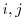
where
atom  is from selection atmsel1 and atom
is from selection atmsel1 and atom  is from selection
atmsel2. Moreover, for a restraint to be created, at least one distance in
the template structures must be less than maximal_distance (in Å).
The mean of this basis pdf is equal to the template distance and its standard
deviation 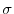
is calculated from an analytic model specified by
distance_rsr_model. Use model 5 for
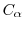
-
distances and model
6 for N-O distances. For models 1 through 6, this standard deviation is
transformed by
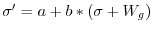
where 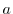
and 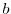
are given
by restraint_stdev and 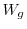
is a gap weighting function of the form
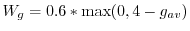
. 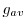
is the average distance of the
two residues involved in the restraint from a gap. For models 3 through 6,
this is additionally transformed by
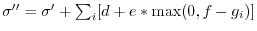
where the sum is over each
of the atoms
involved in the distance, 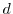
is from selection
atmsel2. Moreover, for a restraint to be created, at least one distance in
the template structures must be less than maximal_distance (in Å).
The mean of this basis pdf is equal to the template distance and its standard
deviation 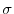
is calculated from an analytic model specified by
distance_rsr_model. Use model 5 for
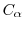
-
distances and model
6 for N-O distances. For models 1 through 6, this standard deviation is
transformed by
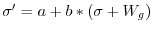
where 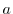
and 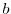
are given
by restraint_stdev and 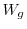
is a gap weighting function of the form
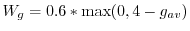
. 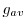
is the average distance of the
two residues involved in the restraint from a gap. For models 3 through 6,
this is additionally transformed by
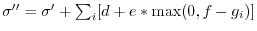
where the sum is over each
of the atoms
involved in the distance, 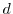
 and 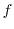
are given by
restraint_stdev2, and 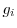
is the distance of each residue from a gap.
The first six models are polynomials and depend on several structural features
of the template and its similarity to the target. The polynomial
coefficients are specified in library file '$PARAMS_LIB'. When
``polynomial model'' 7 is selected, the standard deviation of restraints
is set to constant
. Each basis pdf in the distance pdf corresponds
to one template structure with an equivalent distance.
and 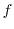
are given by
restraint_stdev2, and 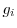
is the distance of each residue from a gap.
The first six models are polynomials and depend on several structural features
of the template and its similarity to the target. The polynomial
coefficients are specified in library file '$PARAMS_LIB'. When
``polynomial model'' 7 is selected, the standard deviation of restraints
is set to constant
. Each basis pdf in the distance pdf corresponds
to one template structure with an equivalent distance.
In addition, the atom pairs restrained by homology-derived restraints
must by default not be in a chemical bond, chemical angle, dihedral angle,
or on an excluded pairs list. This behavior can be changed by resetting
energy_data.excl_local (see conjugate_gradients()).
If the restrained distance for a given atom pair is less than
exclude_distance, that pair is also excluded from the nonbonded list.
This is useful if you are building short distance restraints to approximate
bonds.
Next: Restraints.unpick_all() unselect
Up: The Restraints class: static
Previous: Restraints.make() make
Contents
Index
Automatic builds
2010-04-21